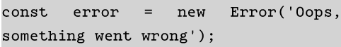
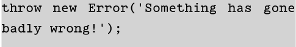

Testing and Debugging
Debugging is a way to identify and deal with errors
-
Errors, Exceptions and Warning
- This are some common error regarding methods and functions:
Stric Mode
-
Feature Detection
-
Debugging in the Browser
-
The Trusty Alert
The most basic debugging method is using alert() method, because alert() stops the program until the user click on OK button
Equality sign is "==="
Assigning a value to a variable "="
Using Console
Error Objects
-
Throwing Exceptions
The programmer should design in a way that prevents the user from making the error

They can be found and corrected:

This mode can helps us to improve its clarity and speed.
When a variable is undeclared, using strict mode can help us to get an exception instead of a warning.

This method help us to check whether a method o function exits before trying to call them

Creating break point help us to know where the bug or problem is placed and there are some
We have already seen this before:
console.log()
The only issue with this method is that it will not actually stop the execution of the program in the same way as alert()
Using a constuctor function, we can create an error object created by the host environment
When an error occurs, javascript throw an error exception. It is posible to throw our own exception with this method
